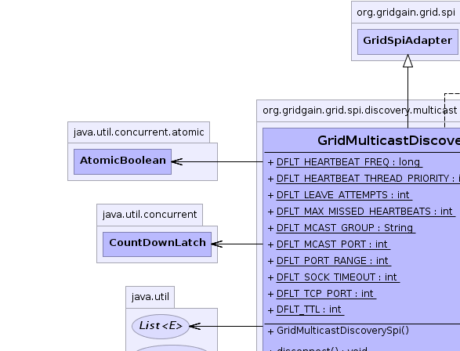
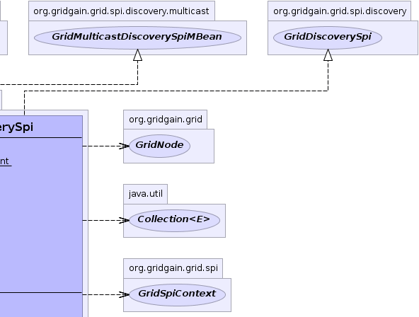
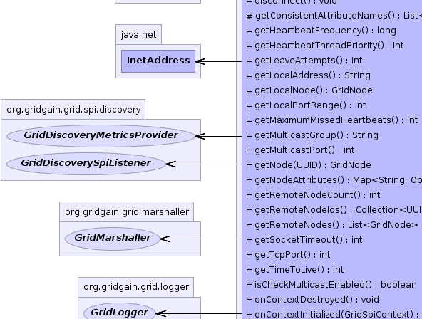
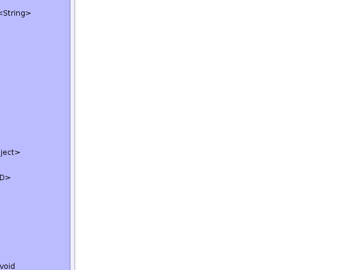
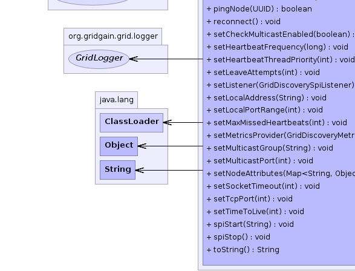

org.gridgain.grid.spi.GridSpiAdapter
org.gridgain.grid.spi.discovery.multicast.GridMulticastDiscoverySpi
org.gridgain.grid.spi.GridSpiAdapter
org.gridgain.grid.spi.discovery.multicast.GridMulticastDiscoverySpi
|
GridGain™ 4.0.0c
Community Edition |
|||||||||
| PREV CLASS NEXT CLASS | FRAMES NO FRAMES | |||||||||
| SUMMARY: NESTED | FIELD | CONSTR | METHOD | DETAIL: FIELD | CONSTR | METHOD | |||||||||
java.lang.Object
@GridSpiInfo(author="GridGain Systems",
url="www.gridgain.com",
email="support@gridgain.com",
version="4.0.0c.22032012")
@GridSpiMultipleInstancesSupport(value=true)
@GridSpiConsistencyChecked(optional=false)
public class GridMulticastDiscoverySpi
Discovery SPI implementation that uses IP-multicast for node discovery. At startup
SPI starts sending IP/Multicast heartbeat messages. Once other nodes
receive these messages, they use TCP/IP to exchange node attributes and then
add the new node to their topology. When a node shuts down, it sends LEAVE
heartbeat to other nodes, so every node in the grid can gracefully remove
this node from topology.
Note that since IP/Multicast is not a reliable protocol, there is no guarantee that a node will be discovered by other grid members. However, IP/Multicast works very reliably within LANs and in most cases this SPI provides a very light weight and easy to use grid node discovery.
GridMulticastDiscoverySpi.setHeartbeatFrequency(long))GridMulticastDiscoverySpi.setLeaveAttempts(int))GridMulticastDiscoverySpi.setLocalAddress(String))GridMulticastDiscoverySpi.setTcpPort(int))GridMulticastDiscoverySpi.setSocketTimeout(int))GridMulticastDiscoverySpi.setTimeToLive(int))GridMulticastDiscoverySpi.setMaxMissedHeartbeats(int))GridMulticastDiscoverySpi.setMulticastGroup(String))GridMulticastDiscoverySpi.setMulticastPort(int))GridMulticastDiscoverySpi.setLocalPortRange(int)GridMulticastDiscoverySpi.setCheckMulticastEnabled(boolean)
GridMulticastDiscoverySpi spi = new GridMulticastDiscoverySpi();
// Put another multicast group.
spi.setMulticastGroup("228.10.10.157");
GridConfigurationAdapter cfg = new GridConfigurationAdapter();
// Override default discovery SPI.
cfg.setDiscoverySpi(spi);
// Starts grid.
G.start(cfg);
<bean id="grid.custom.cfg" class="org.gridgain.grid.GridConfigurationAdapter" singleton="true">
...
<property name="discoverySpi">
<bean class="org.gridgain.grid.spi.discovery.multicast.GridMulticastDiscoverySpi">
<property name="multicastGroup" value="228.10.10.157"/>
</bean>
</property>
...
</bean>

For information about Spring framework visit www.springframework.org
| Wiki | |
| Forum |
GridDiscoverySpi
|  |  |
|  |  |
|  |  |
| Field Summary | |
|---|---|
static long |
DFLT_HEARTBEAT_FREQ
Default heartbeat delay (value is 3,000ms). |
static int |
DFLT_HEARTBEAT_THREAD_PRIORITY
Default heartbeat thread priority. |
static int |
DFLT_LEAVE_ATTEMPTS
Default number of attempts to send leaving notification (value is 3). |
static int |
DFLT_MAX_MISSED_HEARTBEATS
Default number of heartbeat messages that could be missed (value is 3). |
static String |
DFLT_MCAST_GROUP
Default multicast IP address (value is 228.1.2.4). |
static int |
DFLT_MCAST_PORT
Default multicast port number (value is 47200). |
static int |
DFLT_PORT_RANGE
Default local port range (value is 100). |
static int |
DFLT_SOCK_TIMEOUT
Default socket operations timeout in milliseconds (value is 2,000ms). |
static int |
DFLT_TCP_PORT
Default local port number for SPI (value is 47300). |
static int |
DFLT_TTL
Default multicast messages time-to-live value (value is 8). |
| Constructor Summary | |
|---|---|
GridMulticastDiscoverySpi()
|
|
| Method Summary | |
|---|---|
void |
disconnect()
Tells discovery SPI to disconnect from topology. |
protected List<String> |
getConsistentAttributeNames()
Returns back a list of attributes that should be consistent for this SPI. |
long |
getHeartbeatFrequency()
Gets delay between heartbeat requests. |
int |
getHeartbeatThreadPriority()
Gets heartbeat thread priority. |
int |
getLeaveAttempts()
Gets number of attempts to notify another nodes that this one is leaving grid. |
String |
getLocalAddress()
Gets local address that was set to SPI with GridMulticastDiscoverySpi.setLocalAddress(String) method. |
GridNode |
getLocalNode()
Gets local node. |
int |
getLocalPortRange()
Gets local port range for either TCP or multicast ports. |
int |
getMaximumMissedHeartbeats()
Gets number of heartbeat requests that could be missed before remote node is considered to be failed. |
String |
getMulticastGroup()
Gets IP address of multicast group. |
int |
getMulticastPort()
Gets port number which multicast messages are sent to. |
GridNode |
getNode(UUID nodeId)
Gets node by ID. |
Map<String,Object> |
getNodeAttributes()
This method is called before SPI starts (before method GridSpi.spiStart(String)
is called). |
int |
getRemoteNodeCount()
Gets the number of remote nodes. |
Collection<UUID> |
getRemoteNodeIds()
Gets set of remote nodes IDs that have READY state. |
List<GridNode> |
getRemoteNodes()
Gets collection of remote nodes in grid or empty collection if no remote nodes found. |
int |
getSocketTimeout()
Gets socket timeout. |
int |
getTcpPort()
Gets local port number that is used by discovery SPI. |
int |
getTimeToLive()
Gets TCP messages time-to-live. |
boolean |
isCheckMulticastEnabled()
By default this value is true. |
protected void |
onContextDestroyed0()
Method to be called in the beginning of onContextDestroyed() method. |
protected void |
onContextInitialized0(GridSpiContext spiCtx)
Method to be called in the end of onContextInitialized method. |
boolean |
pingNode(UUID nodeId)
Pings the remote node to see if it's alive. |
void |
reconnect()
Tells discovery SPI to reconnect to topology. |
void |
setCheckMulticastEnabled(boolean isCheckMcastEnabled)
Enables or disabled check whether multicast is enabled on local node. |
void |
setHeartbeatFrequency(long beatFreq)
Sets delay between heartbeat requests. |
void |
setHeartbeatThreadPriority(int beatThreadPri)
Sets heartbeat thread priority. |
void |
setLeaveAttempts(int leaveAttempts)
Sets number of attempts to notify another nodes that this one is leaving grid. |
void |
setListener(GridDiscoverySpiListener lsnr)
Sets a listener for discovery events. |
void |
setLocalAddress(String locAddr)
Sets local host IP address that discovery SPI uses. |
void |
setLocalPortRange(int locPortRange)
Sets local port range for TCP and Multicast ports (value must greater than or equal to 0). |
void |
setMaxMissedHeartbeats(int maxMissedBeats)
Sets number of heartbeat requests that could be missed before remote node is considered to be failed. |
void |
setMetricsProvider(GridDiscoveryMetricsProvider metricsProvider)
Sets discovery metrics provider. |
void |
setMulticastGroup(String mcastGrp)
Sets IP address of multicast group. |
void |
setMulticastPort(int mcastPort)
Sets port number which multicast messages are sent to. |
void |
setNodeAttributes(Map<String,Object> attrs)
Sets node attributes which will be distributed in grid during join process. |
void |
setSocketTimeout(int sockTimeout)
Sets socket operations timeout. |
void |
setTcpPort(int tcpPort)
Sets local TCP port number to be used for node attribute exchange upon discovery. |
void |
setTimeToLive(int ttl)
Sets Multicast messages time-to-live in router hops. |
void |
spiStart(String gridName)
This method is called to start SPI. |
void |
spiStop()
This method is called to stop SPI. |
String |
toString()
|
| Methods inherited from class org.gridgain.grid.spi.GridSpiAdapter |
|---|
assertParameter, checkConfigurationConsistency0, configInfo, createSpiAttributeName, getAuthor, getGridGainHome, getLocalNodeId, getName, getSpiContext, getStartTimestamp, getStartTimestampFormatted, getUpTime, getUpTimeFormatted, getVendorEmail, getVendorUrl, getVersion, injectables, onContextDestroyed, onContextInitialized, registerMBean, setJson, setName, startInfo, startStopwatch, stopInfo, unregisterMBean |
| Methods inherited from class java.lang.Object |
|---|
clone, equals, finalize, getClass, hashCode, notify, notifyAll, wait, wait, wait |
| Methods inherited from interface org.gridgain.grid.spi.GridSpi |
|---|
getName, onContextDestroyed, onContextInitialized |
| Methods inherited from interface org.gridgain.grid.spi.GridSpiJsonConfigurable |
|---|
setJson |
| Methods inherited from interface org.gridgain.grid.spi.GridSpiManagementMBean |
|---|
getAuthor, getGridGainHome, getLocalNodeId, getName, getStartTimestamp, getStartTimestampFormatted, getUpTime, getUpTimeFormatted, getVendorEmail, getVendorUrl, getVersion |
| Field Detail |
|---|
public static final long DFLT_HEARTBEAT_FREQ
3,000ms).
public static final int DFLT_SOCK_TIMEOUT
2,000ms).
public static final int DFLT_HEARTBEAT_THREAD_PRIORITY
public static final int DFLT_MAX_MISSED_HEARTBEATS
3).
public static final String DFLT_MCAST_GROUP
228.1.2.4).
public static final int DFLT_MCAST_PORT
47200).
public static final int DFLT_TCP_PORT
47300).
public static final int DFLT_PORT_RANGE
100).
See GridMulticastDiscoverySpi.setLocalPortRange(int) for details.
public static final int DFLT_LEAVE_ATTEMPTS
3).
public static final int DFLT_TTL
8).
| Constructor Detail |
|---|
public GridMulticastDiscoverySpi()
| Method Detail |
|---|
@GridSpiConfiguration(optional=true) public void setMulticastGroup(String mcastGrp)
If not provided, default value is GridMulticastDiscoverySpi.DFLT_MCAST_GROUP.
mcastGrp - Multicast IP address.public String getMulticastGroup()
getMulticastGroup in interface GridMulticastDiscoverySpiMBean@GridSpiConfiguration(optional=true) public void setMulticastPort(int mcastPort)
If not provided, default value is GridMulticastDiscoverySpi.DFLT_MCAST_PORT.
mcastPort - Multicast port number.public int getMulticastPort()
getMulticastPort in interface GridMulticastDiscoverySpiMBean@GridSpiConfiguration(optional=true) public void setTcpPort(int tcpPort)
If not provided, default value is GridMulticastDiscoverySpi.DFLT_TCP_PORT.
tcpPort - Port number.public int getTcpPort()
getTcpPort in interface GridMulticastDiscoverySpiMBean@GridSpiConfiguration(optional=true) public void setHeartbeatFrequency(long beatFreq)
If not provided, default value is GridMulticastDiscoverySpi.DFLT_HEARTBEAT_FREQ.
beatFreq - Time in milliseconds.public long getHeartbeatFrequency()
getHeartbeatFrequency in interface GridMulticastDiscoverySpiMBean@GridSpiConfiguration(optional=true) public void setSocketTimeout(int sockTimeout)
This timeout is used to limit connection time and read/write to socket time.
If not specified, default is GridMulticastDiscoverySpi.DFLT_SOCK_TIMEOUT.
sockTimeout - Socket connection timeout.public int getSocketTimeout()
getSocketTimeout in interface GridMulticastDiscoverySpiMBeanpublic int getHeartbeatThreadPriority()
getHeartbeatThreadPriority in interface GridMulticastDiscoverySpiMBean@GridSpiConfiguration(optional=true) public void setHeartbeatThreadPriority(int beatThreadPri)
beatThreadPri - Heartbeat thread priority.@GridSpiConfiguration(optional=true) public void setMaxMissedHeartbeats(int maxMissedBeats)
If not provided, default value is GridMulticastDiscoverySpi.DFLT_MAX_MISSED_HEARTBEATS.
maxMissedBeats - Number of missed requests.public int getMaximumMissedHeartbeats()
getMaximumMissedHeartbeats in interface GridMulticastDiscoverySpiMBean@GridSpiConfiguration(optional=true) public void setLeaveAttempts(int leaveAttempts)
If not provided, default value is GridMulticastDiscoverySpi.DFLT_LEAVE_ATTEMPTS.
leaveAttempts - Number of attempts.public int getLeaveAttempts()
getLeaveAttempts in interface GridMulticastDiscoverySpiMBean@GridSpiConfiguration(optional=true) @GridLocalHostResource public void setLocalAddress(String locAddr)
If not provided, by default a first found non-loopback address
will be used. If there is no non-loopback address available,
then InetAddress.getLocalHost() will be used.
locAddr - IP address.public String getLocalAddress()
GridMulticastDiscoverySpi.setLocalAddress(String) method.
public int getTimeToLive()
getTimeToLive in interface GridMulticastDiscoverySpiMBean@GridSpiConfiguration(optional=true) public void setTimeToLive(int ttl)
If not provided, default value is GridMulticastDiscoverySpi.DFLT_TTL.
ttl - Messages TTL.@GridSpiConfiguration(optional=true) public void setLocalPortRange(int locPortRange)
0).
If provided local port (see GridMulticastDiscoverySpi.setMulticastPort(int) or GridMulticastDiscoverySpi.setTcpPort(int) is occupied,
implementation will try to increment the port number for as long as it is less than
initial value plus this range.
If port range value is 0, then implementation will try bind only to the port provided by
GridMulticastDiscoverySpi.setMulticastPort(int) or GridMulticastDiscoverySpi.setTcpPort(int) methods and fail if binding to these
ports did not succeed.
Local port range is very useful during development when more than one grid nodes need to run on the same physical machine.
locPortRange - New local port range.GridMulticastDiscoverySpi.DFLT_PORT_RANGEpublic int getLocalPortRange()
GridMulticastDiscoverySpi.setLocalPortRange(int) for details.
getLocalPortRange in interface GridMulticastDiscoverySpiMBeanpublic boolean isCheckMulticastEnabled()
true. On startup GridGain will check
if local node can receive multicast packets, and if not, will not allow
the node to startup.
isCheckMulticastEnabled in interface GridMulticastDiscoverySpiMBeanTrue if multicast check is enabled,
false otherwise.public void setCheckMulticastEnabled(boolean isCheckMcastEnabled)
true. On startup GridGain will check
if local node can receive multicast packets, and if not, will not allow
the node to startup.
This property should be disabled in rare cases when loopback multicast is disabled, but multicast to other remote boxes is enabled.
isCheckMcastEnabled - True for enabling multicast check,
false for disabling it.public void setNodeAttributes(Map<String,Object> attrs)
setNodeAttributes in interface GridDiscoverySpiattrs - Map of node attributes.public List<GridNode> getRemoteNodes()
getRemoteNodes in interface GridDiscoverySpi@Nullable public GridNode getNode(UUID nodeId)
getNode in interface GridDiscoverySpinodeId - Node ID.
null if node is not found.public Collection<UUID> getRemoteNodeIds()
READY state.
getRemoteNodeIds in interface GridMulticastDiscoverySpiMBeanpublic int getRemoteNodeCount()
getRemoteNodeCount in interface GridMulticastDiscoverySpiMBeanpublic GridNode getLocalNode()
getLocalNode in interface GridDiscoverySpipublic void setListener(GridDiscoverySpiListener lsnr)
GridDiscoveryEvent for a set of all possible
discovery events.
Note that as of GridGain 3.0.2 this method is called before
method GridSpi.spiStart(String) is called. This is done to
avoid potential window when SPI is started but the listener is
not registered yet.
setListener in interface GridDiscoverySpilsnr - Listener to discovery events or null to unset the listener.public void setMetricsProvider(GridDiscoveryMetricsProvider metricsProvider)
GridDiscoveryMetricsProvider.getMetrics() method to exchange
dynamic metrics between nodes.
setMetricsProvider in interface GridDiscoverySpimetricsProvider - Provider of metrics data.public Map<String,Object> getNodeAttributes() throws GridSpiException
GridSpi.spiStart(String)
is called). It allows SPI implementation to add attributes to a local
node. Kernel collects these attributes from all SPI implementations
loaded up and then passes it to discovery SPI so that they can be
exchanged with other nodes.
getNodeAttributes in interface GridSpigetNodeAttributes in class GridSpiAdapterGridSpiException - Throws in case of any error.
public void spiStart(String gridName)
throws GridSpiException
spiStart in interface GridSpiGridSpiException - Throws in case of any error during SPI start.gridName - Name of grid instance this SPI is being started for
(null for default grid).
public void spiStop()
throws GridSpiException
Note that this method can be called at any point including during recovery of failed start. It should make no assumptions on what state SPI will be in when this method is called.
spiStop in interface GridSpiGridSpiException - Thrown in case of any error during SPI stop.
protected void onContextInitialized0(GridSpiContext spiCtx)
throws GridSpiException
onContextInitialized0 in class GridSpiAdapterGridSpiException - In case of errors.spiCtx - SPI context.protected void onContextDestroyed0()
onContextDestroyed0 in class GridSpiAdapter
public void disconnect()
throws GridSpiException
GridSpi.spiStop() with accounting that it is not a full stop,
but disconnect before reconnect (i.e. some internal threads and
resources may be preserved on disconnect and reused on reconnect again).
disconnect in interface GridDiscoverySpiGridSpiException - If any error occurs.GridDiscoverySpi.reconnect()
public void reconnect()
throws GridSpiException
GridSpi.spiStart(String) with accounting that it is not a full start,
but reconnect (i.e. some internal threads and resources may be preserved
on disconnect and reused on reconnect again).
Prior to calling this method manager will ensure, that it is in the correct network segment.
reconnect in interface GridDiscoverySpiGridSpiException - If any error occurs.GridDiscoverySpi.disconnect()public boolean pingNode(UUID nodeId)
pingNode in interface GridDiscoverySpinodeId - Node Id.
true if node alive, false otherwise.protected List<String> getConsistentAttributeNames()
getConsistentAttributeNames in class GridSpiAdapterpublic String toString()
toString in class Object
|
GridGain™ 4.0.0c
Community Edition |
|||||||||
| PREV CLASS NEXT CLASS | FRAMES NO FRAMES | |||||||||
| SUMMARY: NESTED | FIELD | CONSTR | METHOD | DETAIL: FIELD | CONSTR | METHOD | |||||||||
|
GridGain - Real Time Big Data
|
|

|
|